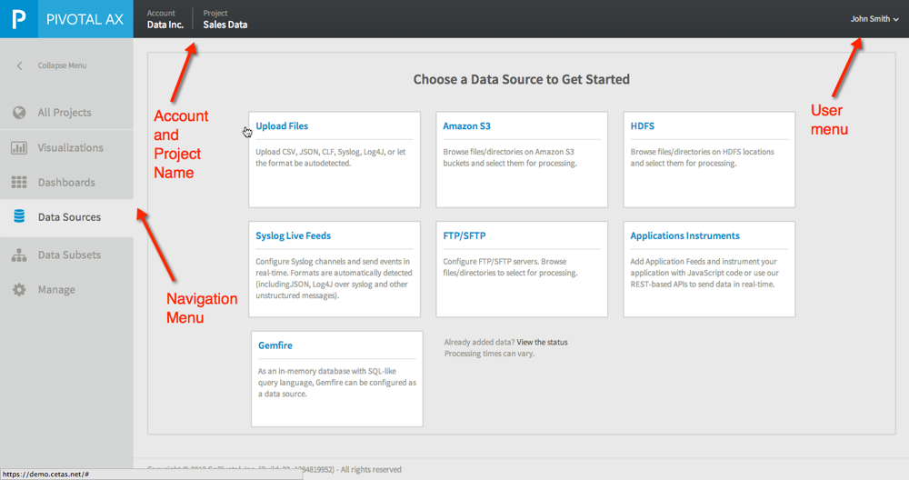
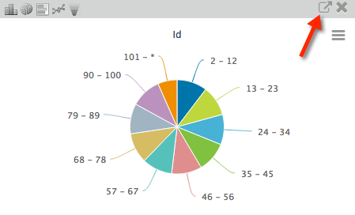
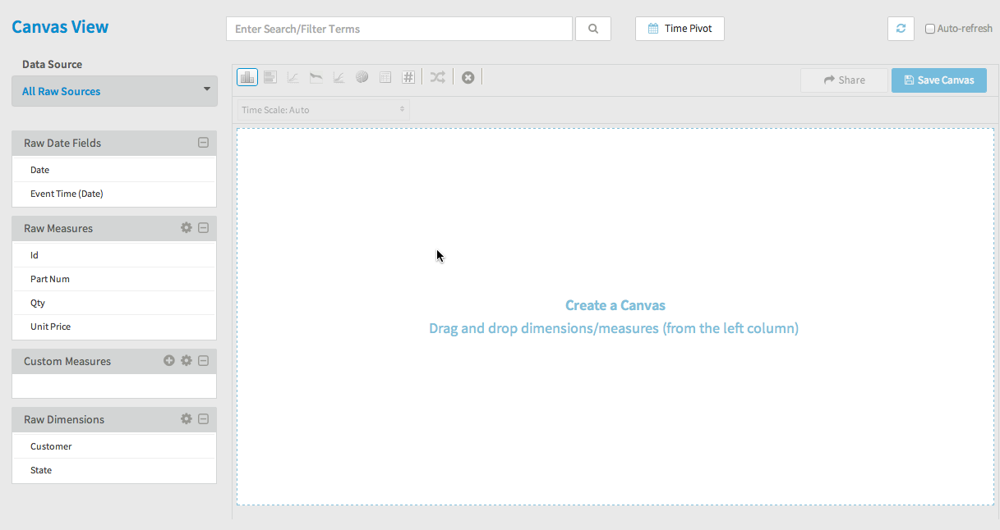
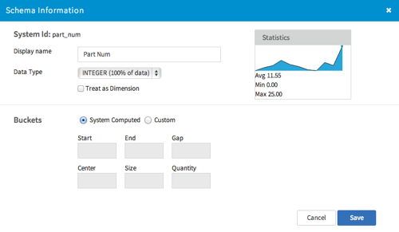
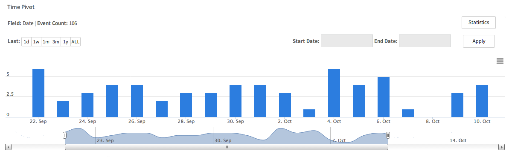
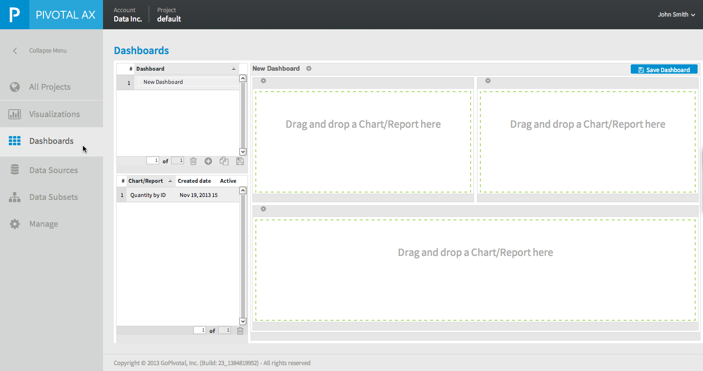
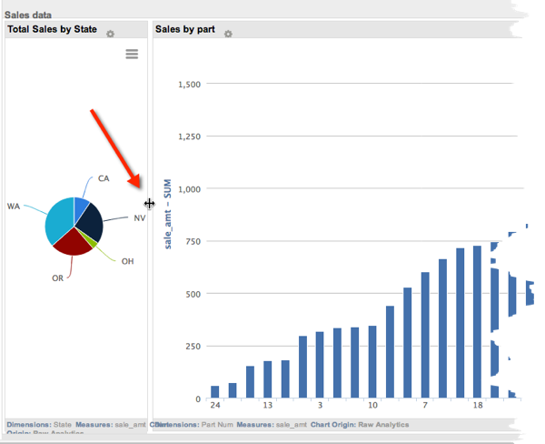
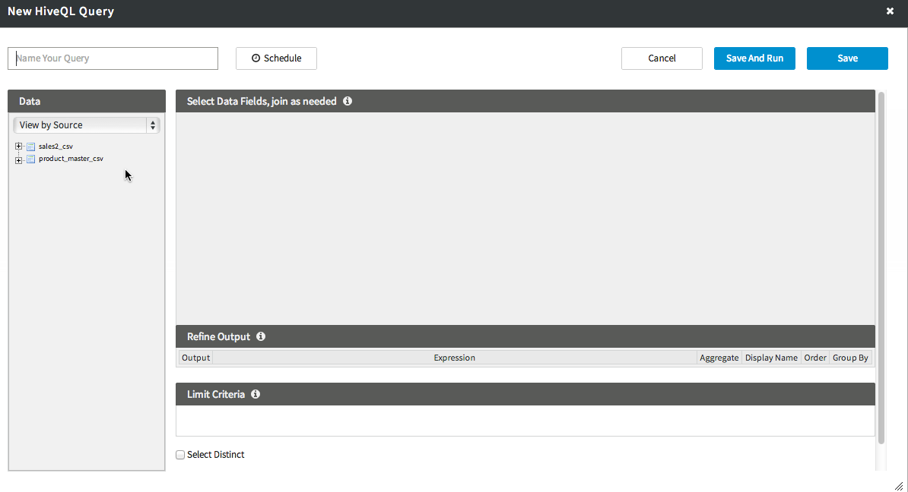

Data Visualization Guide
Overview of the Pivotal AX Interface
After you create your Pivotal AX account and log in, the Pivotal AX application displays in your Web browser. For new users, the application opens in the Data Sources area. The Pivotal AX application contains the following parts:
Navigation Menu Click the Collapse Menu arrow to collapse the menu to a set of icons without labels. Click the arrow again to expand the menu to include the labels. The Navigation Menu contains the following options:
All Projects—Create a new project, select an existing project, or view a summary page of all projects.
See Managing Projects.
Visualizations—View and create visualizations of your data.
See Data Visualization Overview.
Available visualizations include:
- Canvas View
- Auto-Charts
- Raw Events
- Data Profile
Dashboards—Consolidate data visualizations for your project on one or more dashboard pages. You can share these pages with other Pivotal AX users.
See Dashboards.
Data Sources—Define the files and live feeds that contain the data you analyze using Pivotal AX.
Data Subsets—Define Hive queries, joins, summary aggregates, or distinct aggregates to further analyze your data.
See Data Subsets.
Manage—Edit data sampling and sharing settings for your project. Administrators can also view other projects.
See Administration Guide.
User Menu From this menu you can edit your user profile, change your password, view an account overview, edit global settings, and logout.
See User Management.
Account and project name

Logging into Pivotal AX
After the installation of Pivotal AX is complete you use a Web browser to access the Pivotal AX application.
From this application, you can:
- Create projects
- Define data sources for analysis
- Visualize data
- Manage your Pivotal AX installation
To log in to Pivotal AX:
Enter the URL of your Pivotal AX installation in your Web browser The Pivotal AX login screen displays:

If this is the first time you are logging in to Pivotal AX, click the New User? Register link.
The New User Registration form displays:

Fill in the form and click Submit.
An email with a confirmation link is sent to the specified email address.
Open the email and click the confirmation link.
The Pivotal AX login screen opens in your Web browser.
Enter your new Pivotal AX user name and password.
The Pivotal AX application opens in your Web browser.
Data Visualization
Pivotal AX allows business analysts to visualize the data ingested by Pivotal AX in a variety of ways. You can create and save your own charts and reports and share them with other Pivotal Analytic users, and you can also download these charts and reports in a variety of graphics formats or as a PDF file. You can choose to display the charts in various formats such as line graphs, bar charts, pie charts, or in tabular format.
You can combine one or more visualizations and save them to a Dashboard. When you view a dashboard, all data in the saved visualizations display the current data set. You can share dashboards with other Pivotal AX users.
Auto-Charts
The Auto-Charts feature presents a set of possible visualizations of your data that you can use as a starting point to create the visualizations you need to analyze your data. These visualizations are automatically created by Pivotal AX based only on the data in your project and may not always provide a useful analysis of your data set. To create custom visualizations, see Canvas View.
To view the Auto-Charts:
- Log in to Pivotal AX.
- Select Visualizations > Auto-Chart from the navigation menu on the left.
The Auto-Charts screen displays:

You can change the type of visualization in each chart by selecting one of the icons at the top of the chart:

If any of the charts present useful data, you can open a chart in Canvas View, save the chart, and add it to a Dashboard.
To open an Auto-Chart in Canvas view and save it:
- Log in to Pivotal AX
- Select Visualizations > Auto-Charts from the navigation menu on the left.
Click the expand icon in the upper-right corner of a chart.

The chart opens in Canvas view.
(Optional) Edit the chart type or other parameters to customize the chart. See Creating a Chart or Report.
Click Save Canvas.
Enter a title for this chart.
Click Save.
Canvas View
After your data is uploaded and processed, the raw measures and dimensions extracted from your data are available for creating charts and reports. Canvas View is an interactive environment where you create custom charts and reports by dragging and dropping data elements onto the canvas.

The left portion of Canvas view displays the data sources and files that you have defined in your project along with the data fields extracted from the data during processing by Pivotal AX.
Selecting a Data Source
You use the Data Source selector to select the data source you want to work with to create charts and reports. Click the down arrow in the Data Source selector to open the list of data sources. The list is divided into various sections, depending on the types of data sources. The sections include Raw Sources Names , Raw Source Filenames, HiveQL queries, Summary Aggregates, and Unique Aggregates.

When you select a source, the fields that correspond to the data sources you choose display below the selector:

The fields display in the following groups:
| Field Groups | Description |
|---|---|
| Raw Date Fields | Displays fields that contain date and time information. The Event Time field is created by Pivotal AX and contains the time that the data was processed by Pivotal AX. If the data source is a static file, this field indicates when the data was processed by Pivotal AX, not the date that the event occurred. If the data source is an application feed or Live feed, this field contains the time when the data arrived for processing by Pivotal AX. |
| Raw Measures | Displays fields that contain quantitative numeric information such as prices, transaction amounts, quantities, or counts. Pivotal AX attempts to correctly classify data fields as Measures or as Dimensions, but does not always have sufficient information to correctly classify the data. For example, a part number field may contain only numbers and therefore is assumed to be a measure when it should actually be classified as a dimension. You can re-classify measures as dimensions. See Modifying Data Fields. Pivotal AX breaks measures into buckets to improve data analysis. For example, the Qty field is divided into buckets of 10:
|
| Custom Measures | The Custom Measures section allows you to create custom fields by calculating a new value using existing fields and constants. For example, you can add a custom measure that multiplies a price by the quantity sold to create a total sales amount field. |
| Raw Dimensions | Displays fields that contain dimension type of data. Dimensions are usually text fields that describe aspects of the data such as gender, location, type of transaction, etc. See Modifying Data Fields. |

Modifying Data Fields
You can change the following attributes of the data fields in your project:
- Change the name of a field
- Re-classify a Raw Measure as a dimension
- Re-classify a Raw Measure that has been changed to a dimension back to a measure
- Change the way the field values are bucketed
To modify a data field:
Hover over a field name and click the edit icon.

The Schema Information Dialog box displays.

Do one of the following:
- Change the name of the field, type a new name in the Display name field.
- To change a Raw Measure to a dimension, select Treat as Dimension.
- To revert a Raw Measure that has been changed to a dimension, select Treat as Measure.
- To change the buckets displayed, select Custom in the Buckets section and enter values to define the buckets.
- Click Save.
Chart Types
When you create a chart or report, you can specify an appropriate type of chart for the data you are visualizing. You can quickly change types to preview their output.
The following types of charts are available:
| Icon | Description |
|---|---|
 |
Column Chart |
 |
Bar Chart |
 |
Line chart |
 |
Stacked chart |
| Area chart | |
 |
Pie chart |
 |
Table |
 |
KPI |
Creating a Chart or Report
To create a chart or report:
- Navigate to Canvas View.
- Select a Data Source. See Selecting a Datasource.
Drag one or more dimensions or measure fields onto the canvas. Not all combinations are available to produce valid reports or charts.
The chart displays.
Select a Chart Type.
See Chart Types.
(Optional) Click the Swap Dimensions button to swap the axes of the chart.
(Optional) Select the data you want to display.
See Filtering Values in Charts and Reports and About Time Pivot.
Click Save Canvas to save the chart.
You can also share the chart. See Sharing a Chart or Report.
Filtering Values in Charts and Reports
You can interactively select the data values you want to visualize.
In Canvas view, click on a field name in the Data Source list.
The list expands to display a list of values.
Select the data values you want to see.
Click the Include or Exclude button. (You may need to scroll do the bottom of the list of values to see these buttons.)
The chart changes to include or exclude the data you specified. You can also select and deselect data values in the chart’s legend.
Sharing a Chart or Report
You can share a chart or report by sending a URL or by embedding Javascript code in a Web page that displays the chart or report. Users who access a shared report or chart do not need to have a Pivotal AX account but they must have network connectivity to the Pivotal AX application.
To share a chart or report:
Open a chart or report in Canvas View, or -
- Select Dashboards from the navigation menu on the left
- Select the dashboard that contains the chart you want to share.
- Click the Configure (gear) icon in the cell containing the chart you want to share.
Select Edit Chart .
The selected chart opens in Canvas View.
Click the Share button.
The Sharing Settings dialog box opens.
Enter a name for your shared chart in the Title field.
Click Next.
A dialog box opens that displays the following:
- Javascript code you can copy and paste into an HTML page to embed the chart in a Web page.
- A URL you can share with others who want to view this chart.
Note: You can also print a chart or export a chart as an image or PDF file. See Exporting or Printing a Chart or Report.
Exporting or Printing a Chart or Report
You can export a chart or report as an image or PDF file and you can also print them.
To export a chart or report:
From Canvas view, Auto Charts, or from a cell in a dashboard, click the Export button:

A menu displays.
From this menu select one of the following options:
- Print Chart (The print dialog box of your browser displays where you can select your printing options.)
- Download PNG image
- Download JPEG image
- Download PDF document
- Download SVG vector image
When you select one of the Download options, the file downloads through your Web browser.
About Time Pivot
The Time Pivot function allows you to limit the data displayed in your visualizations to a specific time range. Time Pivot is available for the following types of visualizations:
- Canvas View
- Auto-Charts
- Raw Events
To use the Time Pivot function:
Click the Time Pivot button above the visualization.
The Time Pivot selector displays.
Select a date field from the Raw Date Fields section beneath Raw Sources and drag it into the Time Pivot area.
Select an overall time range from the Last: selector. You can select 1d, 1w, 1m, 3m, 1y, or ALL.

Time Pivot displays your data as buckets of events. A bar chart indicates the number of events for each time bucket.
Use the sliders to select a date range, or enter a date range using the Start Date and End Date fields. You can also click on a bar in the time pivot bar chart to select only the time value of the bar.

Click Apply.
Click the Time Pivot button again to close the Time Pivot selector.
The time range you have selected remains in effect.
Raw Events
The Raw Events view allows you to view a list of the raw data that has been loaded into your project. In this view you can search and filter the list to drill down into a specific record or set of records.
To view Raw Events:
- Log in to Pivotal AX.
- Select Visualizations > Raw Events from the navigation menu on the left.
In the Raw Source Names drop-down list, select the data file containing the raw events you want to view.

A listing of raw data events displays.
You can filter the list of events using the following techniques:
- Select a Raw Measure or Dimension from the Data Source column.
- Click on field value in an event listing. Only events where the field matches this value display.
- Enter a search term in the search bar.
- Click Time Pivot and select a time range.
Note that the filter values display above the list of raw events. Click the x in each displayed filter to remove the filter.

Data Profile
The Data Profile view displays pre-configured reports with statistical information about measures and dimensions from the raw data sources in your project. The charts presented on this page are not editable and you can not add additional charts.
To open this view, Select Visualizations > Data Profile from the navigation menu on the left.
Dashboards
Dashboards allow you to consolidate one or more reports and charts from your project on to one or more dashboard pages. A dashboard page consists of one or more cells. Each cell contains a report or chart. As you create a dashboard, you can modify the size and location of the cells. You can clone existing dashboards to create a new dashboard based on the original.
Before creating dashboards, create at least one chart. See Canvas View.
To create a dashboard:
Select Dashboards from the left navigation menu.
The Dashboards screen displays. Note the Chart/Report list in the lower-left portion of the Dashboards page.

Click the + icon, located at the bottom of the list of dashboards to create a new dashboard.
Type a name for your dashboard in its name field.
Select an item from the Chart/Report list and drag it into one of the cells in the blank dashboard.
The chart displays in the cell.
Add additional charts as required.
Click the Configure (Gear) icon to open the Dashboard Menu where you can modify the layout of the dashboard. From this menu you can:
- Save the dashboard
- Flip the dashboard cells horizontally or vertically
- Rotate the dashboard cells
- Refresh the chart contents on the dashboard.
Click the Configure (gear) icon in a report cell to open the Report Menu. From this menu you can:
- Edit the chart (the view switches to Canvas View)
- Show or hide the legend
- Refresh the content
- Change the type of chart (Chose from Column, Bar, Areaspline, AreaStacked, Spline, Pie, or Table.)
- Edit the title of the cell
- Add cells to the dashboard
- Remove content from a cell
- Hide the footer
- Delete the cell
Adjust the size and shape of the cells by clicking and dragging the separator lines between the cells.

Click Save Dashboard.
To Delete a dashboard:
- Select Dashboards from the left navigation menu.
- From the list of dashboards, select the dashboard you want to delete.
- Click the trash icon below the list of dashboards.
To Clone a dashboard:
- Select Dashboards from the left navigation menu.
- From the list of dashboards, select the dashboard you want to clone.
- Click the clone icon below the list of dashboards.
- Click the Save Dashboard button.
Data Subsets
Data subsets allow you to perform more complex data analysis on large data sets by creating Hive queries, Summary Aggregates, and Unique Aggregates. After you create these data subsets you can use them in charts and reports.
- HiveQL Queries use the Hive query language and allow you to join multiple data bases and and create custom queries.
- Summary Aggregates allow you to summarize large data sets. Using summary aggregates can improve performance.
- Unique Aggregates allow you to create visualizations that report all of the unique values in a data set.
Note: Data subsets only operate on incoming data. To analyze data from static files using data subsets, you must re-process that data before you can using the data subset fields in your charts and reports. Live data from feeds or applications is processed based on the schedules you define for each subset.
HiveQL Queries
To create a HiveQL Query:
- Select Data Subsets from the left Navigation menu.
- Select HiveQL Queries.
Click New Query.
A dialog box opens where you can define your query or aggregate:

Drag one or more data sources from the Data list on the left into the Select Data Fields work area.
Select the fields in each data source that you want to output in your query.
Note that a Hive Query string is created in the Preview HiveQL box at the bottom of dialog box as you work with the data.
(Optional) Join fields in the data base by selecting a field from one of the data sources and dragging it to a field in another data source that you want to join to the first field.
A connector line displays showing the relationship of the fields and the fields are listed in the Refine Output table :

(Optional) In the Refine Output box, select a type of aggregation from the drop-down lists in the Aggregate field.
- For numeric data, you can chose COUNT, COUNT DISTINCT, AVG, MAX, MIN, or SUM.
- For string data, you can choose COUNT or COUNT DISTINCT.
(Optional) Enter a display name for the field in the Display Name column.
(Optional) Select a sorting option (ASC or DESC) from the drop-down list in the Order field.
(Optional) Manually enter a
WHEREclause in the Limit Criteria box.(Optional) Click Schedule and enter a schedule for when you want this query to run. Save the schedule when you are finished.
Enter a name for your query.
Click Save and Run to run the query now or click Save to run the query later.
Note: To use a HiveQL Query in a chart or report, you must reprocess any static data files. Streaming data will be processed by the query as it arrives or when you schedule the query to run.
The new data subsets are now available in Canvas View for creating charts and reports. In Canvas View, click the down arrow in the Data Source list, select HiveQL Queries and then select your query from the list.
Summary Aggregates
Summary aggregates allow you to create a query that summarizes numeric fields. Summary aggregates are useful for large data sets where you do not need the ability to access the individual events.
To create a Summary Aggregate:
- Select Data Subsets > Summary Aggregates from the navigation menu.
Click New Aggregate.
The Aggregate Editor displays.
Click Create Aggregate Definition.
The Configure Aggregate Definition screen displays:

Enter a name for the aggregate.
From the list of Data fields on the left, drag Measures or Dimensions into their corresponding boxes in the screen.
If needed for your analysis, drag date files to the Summaries Timescales box. Select a frequency.
You can select Yearly, Quarterly, Monthly, Weekly, or Daily.
Click Save and Next.
Click Next.
Select the events to process for the aggregate.
You can select Future events or Select Events within custom data range.
Select a schedule option. You can choose from the following:
- Real-time
- Run-immediately
- Daily
- Weekly
- Monthly
Click Save.
The Summary Aggregates page displays. You can see a list of the Summary Aggregates you defined.
To edit the aggregate, hover over its name and click the edit icon.
To delete the aggregate, hover over its name and click the trash icon.
Click the aggregate name to toggle display of run statistics. In the Last Run section, you can view information on the last run of the aggregate. Click Details for detailed status.